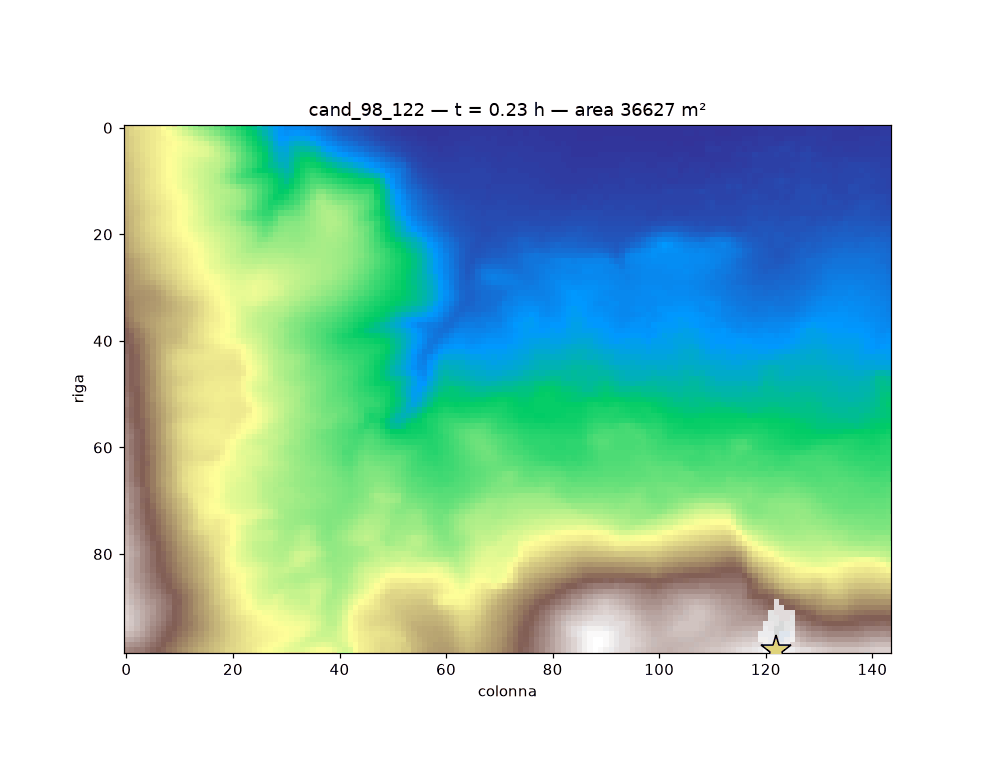
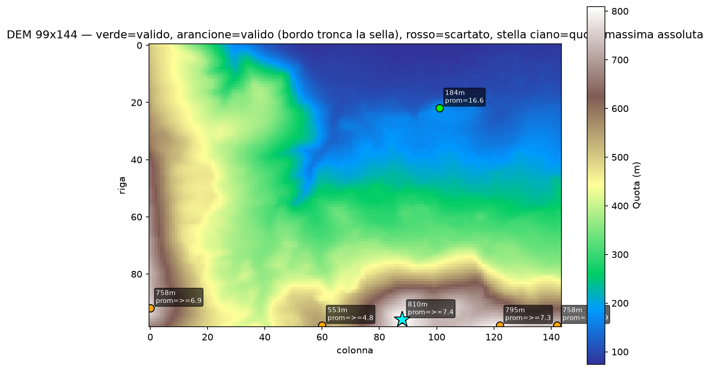
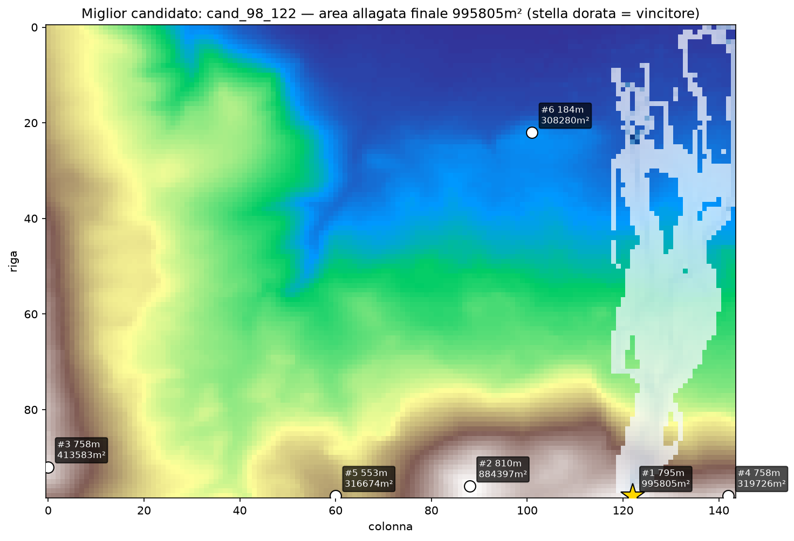
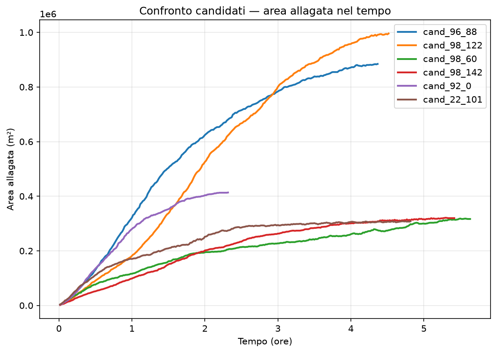

Simulations




Method
- Ingestion. Load and clean the elevation grid from a public DEM (Copernicus GLO-30).
- Candidate selection. Local maxima filtered by prominence, never a plain elevation argmax: the highest point is rarely the best one.
- Flood simulation. Per candidate, a cellular-automata water spread over the depression-filled DEM (priority-flood), producing Area(t) and Area(Volume) curves.
- Ranking & output. Comparison chart, hypsometric map with water overlay, 2D and 3D time-lapse animations over satellite imagery.
Honest scope. The core is deterministic NumPy/SciPy raster computation: there is no machine-learning or LLM component, and it is an exploratory tool, not a production flood-forecasting system. Results based on 30m public DEMs are flagged as resolution-limited by design.